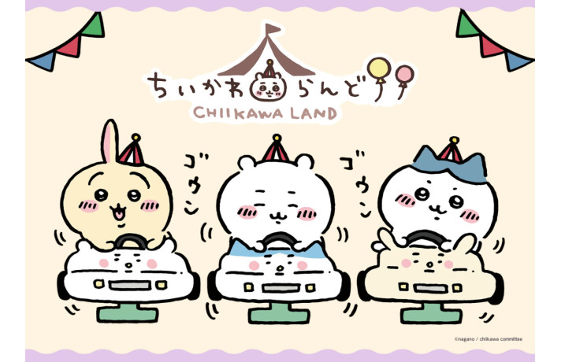

- 1.HTML
- 2.CSS
- 3.JavaScript
HTML이란 무엇인가?
Hypertext MArkup Language (HTML)is the
Standard markup language for
creating wab pages amd web appications.
HTML Describes the structure of a web page semantically and org
nally included cues for the appearance of the document.

HTML elements are the building blocks of HTML pages. With HTML constru
cts, images and other objects, such as interactive forms, may b
e embedded into the rendered page. it provides a means to creat
e structured documents by denoting structural semantics for tex
t such afs headings, paragraphs, lists. links. quotes and other
items. HTML elements are delineated by tags, written using angl
e brackets.
립버전 다운로드를 제목에 달아놓고 본문에는 첨부파일은 온데간데 없고 아무말을 늘어놓는 드립이 있으며 특히 스타크래프트 1.16.1 립버전 다운로드로 치면 수많은 예시를 볼 수 있었다. 2024년인 지금엔 검색엔진 기술이 좋아져 스팸문구를 더이상 찾아볼 수 없게되었으며 스크린샷하나도 남겨져있지 않아 추억의 스팸메세지가 되었다. 다만 예전보다 교묘해졌을 뿐 관련없는 정보를 넣어 검색 노출도를 늘리는 꼼수 자체는 여전히 이루어지고 있다. #